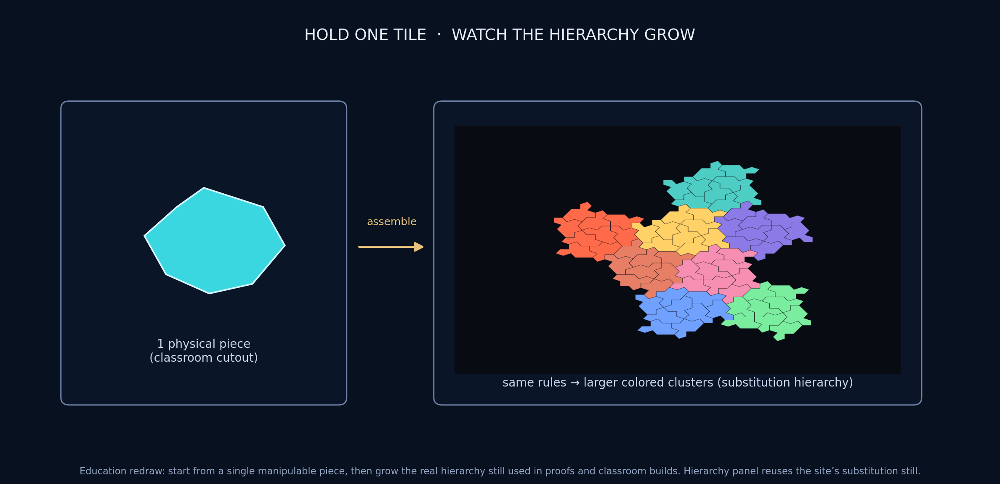

Education
Teaching a fresh mathematical discovery through manipulable patches and physical models.
A discovery you can hold
Most mathematics taught in school is centuries old. The aperiodic monotile was discovered in 2023 — by a retired print technician experimenting with paper cutouts — and its proof is genuinely deep.[1][3] That combination is rare gold for educators: a frontier result whose objects fit in a student's hand. The National Museum of Mathematics ran public competitions and exhibits around the Hat and Spectre within months of publication (see bibliography for links).

{kind=link}
Activities by learner stage
- Primary / informal: sort shapes, trace boundaries, distinguish slide/turn/flip, and extend a supplied cluster. Ask learners to predict a fit before testing it.
- Secondary: compare periodic and non-periodic patches, map tile orientations, count labels across generations, graph the Fibonacci–Lucas recurrence reported for supertiles,[12] or use fold-and-cut crease templates to produce Hat, Turtle, and straight Tile(1,1) outlines with one cut after flat folding.[67]
- Undergraduate: implement affine transforms, validate edge contacts, build a substitution matrix, or compute a finite-patch Fourier transform.
- Graduate / research: reproduce one published diffraction, mechanics, or sampling comparison with matched controls and a preregistered metric.[35][37][42]
Existing activities provide concrete scales. Gathering 4 Gardner publishes a 488-piece hierarchical group build. Marcello Seri’s CC BY 4.0 workshop kit reports 657 personalized Spectres assembled in five hours by hundreds of participants, with bilingual booklets and wall blueprints. OEIS A363348 turns the hierarchy into turtle graphics: 14 terms draw one Hat, 140 draw H8, and 1,588 draw the next supertile. These are replicable activities, not controlled studies of learning outcomes.

Misconceptions to surface
- “Non-periodic” does not mean random, and recurring local motifs do not make a tiling periodic.
- One non-periodic arrangement does not make a shape an aperiodic monotile; periodic alternatives must be impossible. The Miki Imura family is a useful contrast.[71]
- Reflection, rotation, and translation are different rigid motions. The Hat requires reflected copies; the strict Spectre modifies edges to exclude them.[1][2]
- A finite classroom patch cannot prove an infinite theorem by appearance. It can illustrate the hierarchy used in a proof.
Assessment and reproducibility
Assess explanations, not merely completed puzzles: can the learner define a translation period, identify a reflected tile, explain a metatile label, and state what a finite patch does not prove? For coding work, grade a small validation report alongside the image.
Publish the exact outline, scale, patch root or seed, generation, clipping rule, palette key, software version, and license. Photograph or export the completed patch and report missing or forced pieces. These records let another class reproduce the activity and distinguish a geometry error from an instructional outcome.
Limits and extensions
Manipulatives privilege visual and motor access; pair them with high-contrast, tactile, large-print, and screen-readable alternatives. Do not present an application proposal as settled science. A useful final assignment is to classify statements as theorem, published measurement, simulation result, or hypothesis, then trace each supported statement to its source.
See also
Aperiodic monotile, Substitution tiling
Categories: Applications